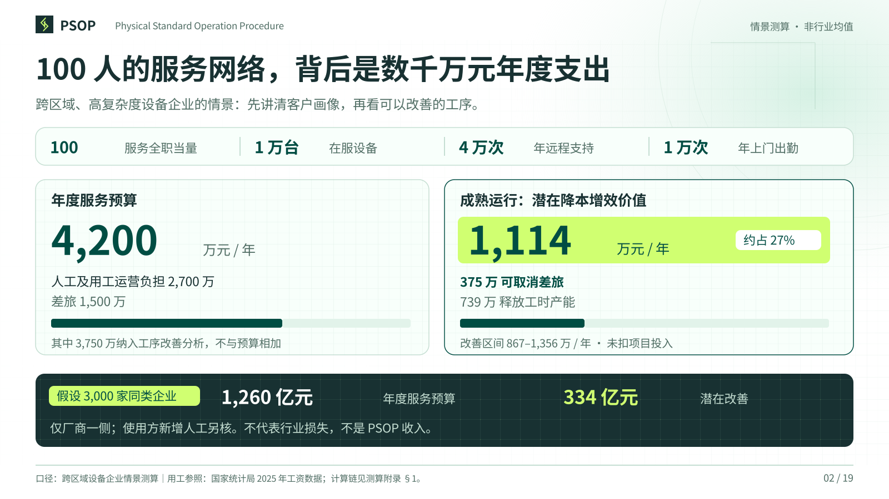
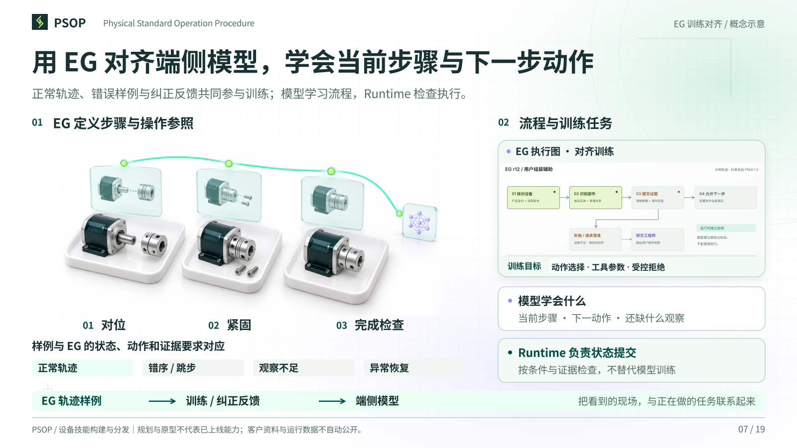
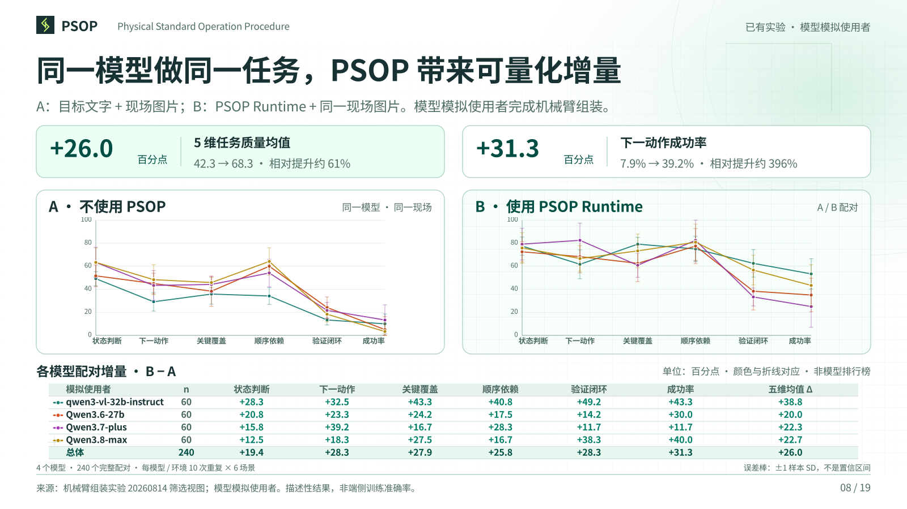
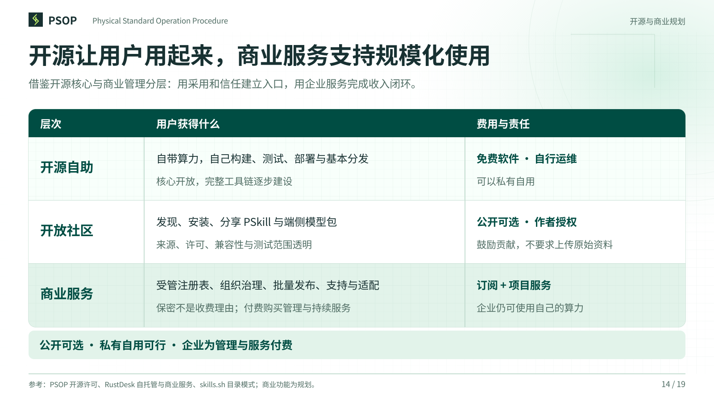
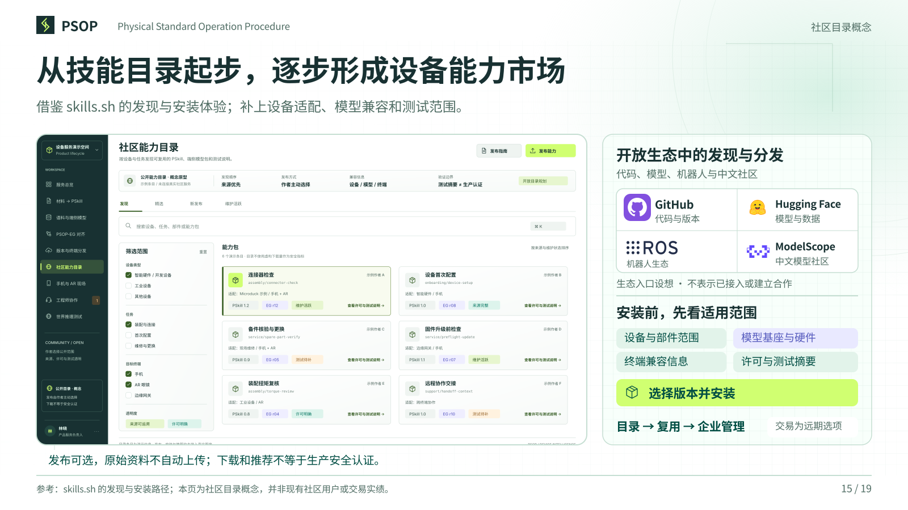
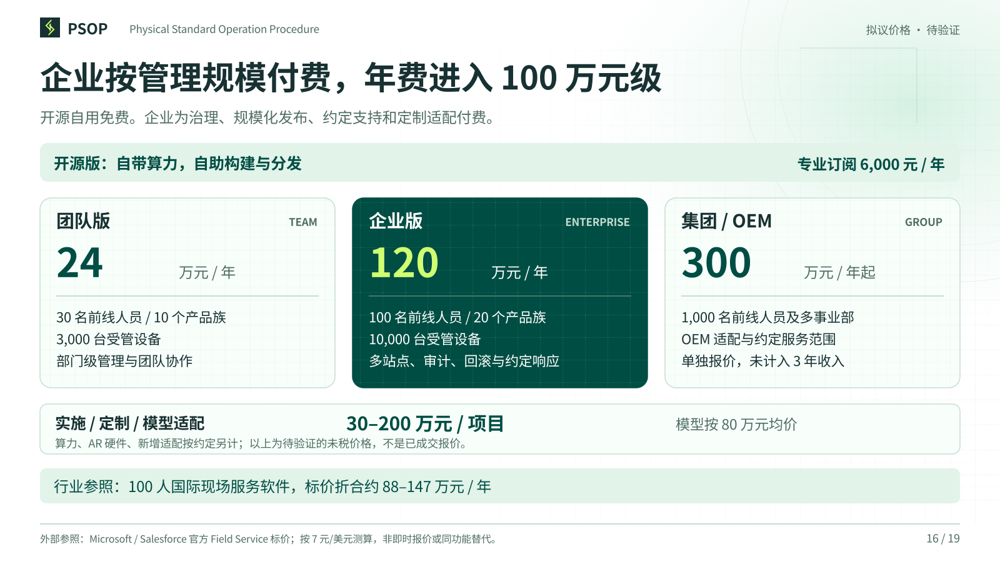
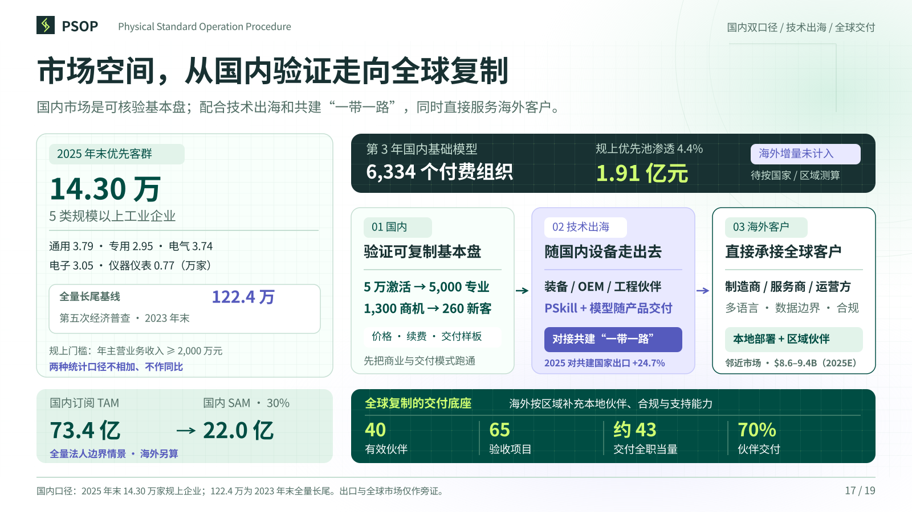
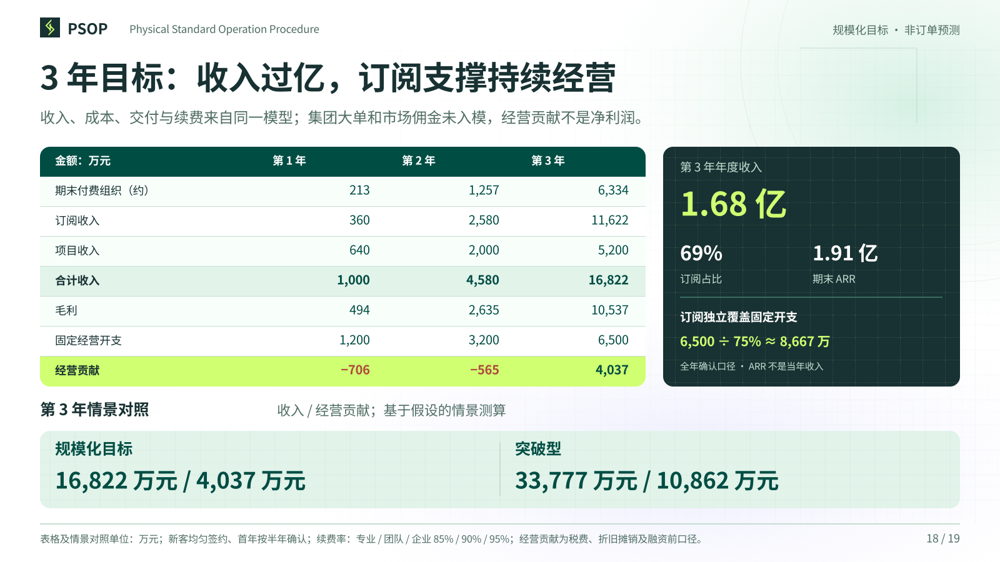
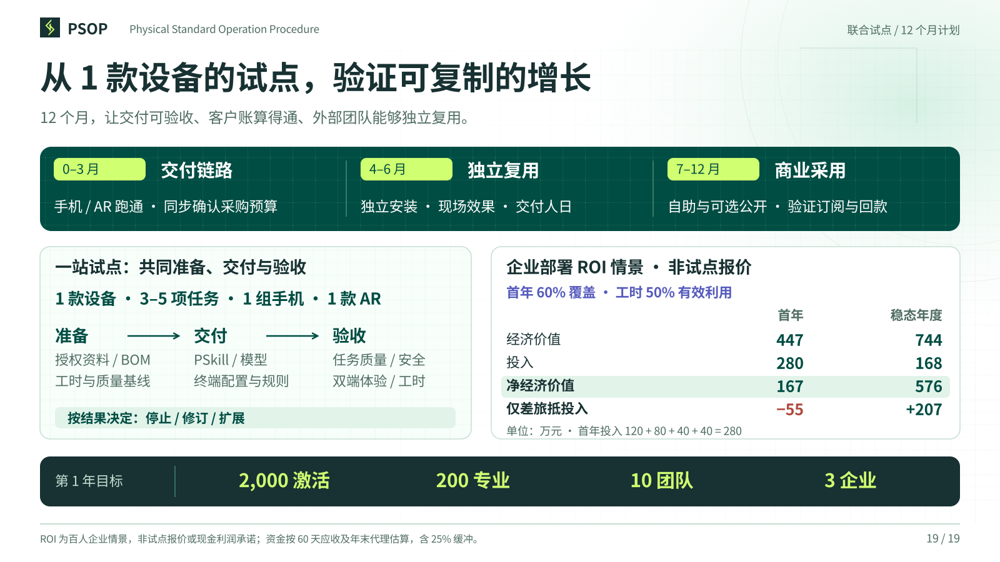

02一个百人服务网络，背后是数千万元的年度支出

03AI 硬件增长，把一次性交付变成持续的能力运营

04从产品资料到端侧能力，PSOP 连接整条交付链

05从产品资料构建 PSkill，连接部件与操作

06对齐 PSkill 知识，支撑端侧推理

07用 EG 对齐端侧模型，学会当前步骤与下一步动作

08同一模型做同一任务，PSOP 带来可量化增量

09一次发布，把技能和模型送到合适的终端

10手机与 AR 眼镜：双手作业，两种现场视角

11用户处理不了，工程师带着上下文接手

12从设备技能，走向可检验的物理世界模型

13设备出厂之后，技能仍能持续交付

14开源让用户自己用起来，商业服务支持企业规模化使用

15从技能目录起步，逐步形成设备能力市场

16按企业管理规模收费，核心年费进入数十万至百万元级

17市场空间，从国内验证走向全球复制

183 年目标：年收入过亿，订阅支撑持续经营
